선생님이 신청한 학급을 승인해 학급 코드를 내주고,
아이들이 읽은 녹음을 들으며 채점해 검사지를 인쇄합니다.
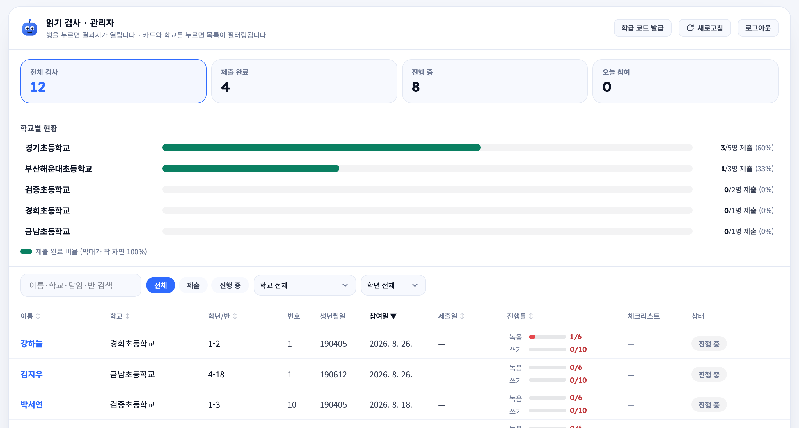
관리자가 가장 자주 보는 화면 — 검사 목록. 행을 누르면 그 아이의 결과지가 열립니다.
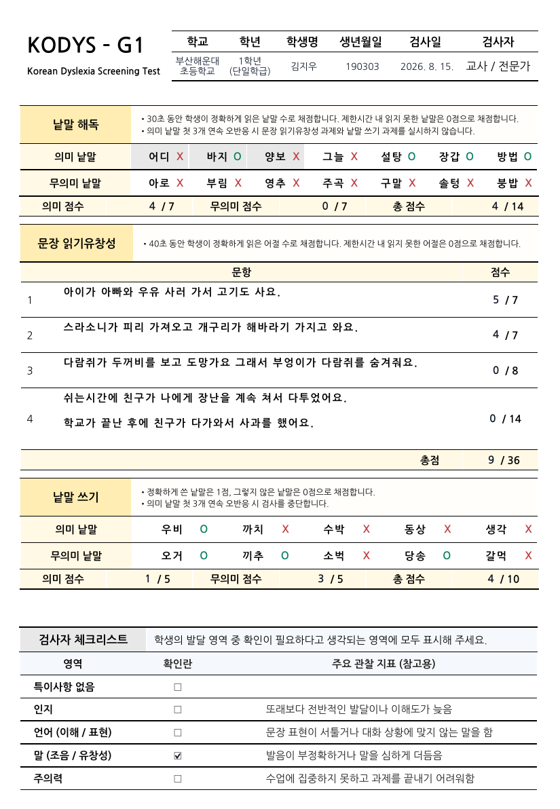
관리자가 하는 일은 결국 이 검사지 한 장을 만드는 것입니다. 임상 담당자가 배포한 원본 검사지에 점수만 얹어 인쇄합니다.
화면은 채점하는 작업대이고, 학교와 보호자에게 나가는 공식 문서는 이 PDF입니다. 자세한 것은 5장에 있습니다.
크롬 또는 엣지에서 배포 주소 뒤에 /admin을 붙여 들어가면 됩니다.
설치할 것은 없고, 로그인은 비밀번호 하나입니다(아이디 없음).
아이가 낱말과 문장을 소리 내어 읽으면 녹음해 두고, 관리자가 그 녹음을 들으며 채점합니다. 자동 채점(음성 인식)은 쓰지 않습니다 — 점수는 사람이 듣고 매깁니다.
파란 칸 두 개가 관리자가 하는 일입니다. 나머지는 선생님과 아이가 각자의 화면에서 합니다.
| 화면 | 주소 | 하는 일 |
|---|---|---|
| 검사 목록 | /admin | 어느 학교에서 몇 명이 검사했는지 보고, 채점할 아이를 골라 결과지로 들어갑니다. |
| 학급 코드 | /admin/codes | 선생님 신청을 승인하고, 필요하면 코드를 직접 만듭니다. 검사 목록 오른쪽 위 학급 코드 발급 버튼으로 들어갑니다. |
https://speech-survey.vercel.app/admin 으로 들어가면 비밀번호 칸 하나가
나옵니다. 아이디는 없습니다. 즐겨찾기에 넣어 두세요.
8시간이 지나면 자동으로 풀립니다. 공용 PC에서 자리를 뜰 때는 기다리지 말고 오른쪽 위 로그아웃을 누르세요 — 화면에 남아 있던 아이들 이름·생년월일까지 함께 지워집니다.
비밀번호를 5번 틀리면 그 자리에서 10분 동안 잠깁니다. 잠긴 것 같으면 10분 뒤에 다시 시도하세요.
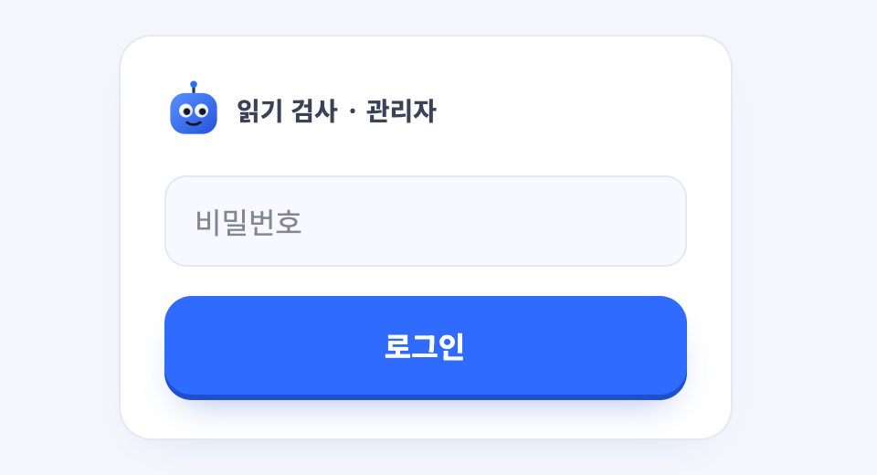
학급 코드 — 학급 하나를 여는 6자리 문자·숫자(예 8VRE8M).
검사 현장은 이것만 입력합니다.
검사(세션) — 아이 한 명이 한 번 받은 검사 기록 하나. 목록의 한 줄이 검사 하나입니다.
결과지 — 검사 한 건을 열어 녹음을 듣고 점수를 찍는 화면.
검사지 PDF — 채점을 끝내고 내려받는 공식 출력물. 종이 검사지에 점수만 얹은 것입니다.
코드 하나가 학급 하나입니다. 코드가 없으면 검사를 시작할 수 없고, 코드를 만드는 사람은 관리자뿐입니다.
| 길 | 어떻게 | 언제 씁니까 |
|---|---|---|
| A. 선생님 신청 승인 보통 이 길입니다 |
선생님이 신청 화면에서 학급 정보와 학생 명단을 올림 → 관리자가 승인 → 코드가 선생님 메일로 자동 발송 | 명단이 함께 들어와, 검사 현장이 이름을 타이핑하지 않고 고르기만 합니다. |
| B. 직접 발급 | 관리자가 학교·학년·반·담임을 직접 입력해 코드를 만들고, 코드를 직접 전달 | 신청 없이 급히 열어야 할 때. 명단이 없어 현장에서 이름을 직접 입력합니다. |
승인을 기다리는 신청이 있으면 /admin/codes 화면 가운데에
대기 중 N건 띠가 뜹니다. 발급 목록보다 위에 있습니다.
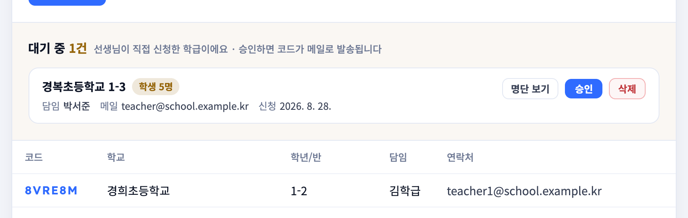
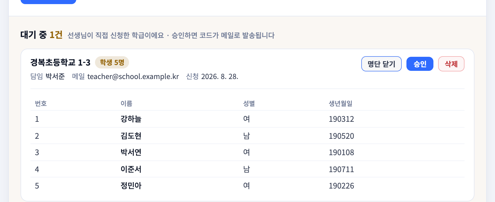
| 문구 | 뜻과 할 일 |
|---|---|
| 승인 완료 · 선생님께 코드 메일을 보냈어요 | 메일이 확실히 나갔습니다. 더 할 일 없습니다. |
| 승인은 됐지만 메일 발송에 실패했어요 | 학급은 열렸지만 선생님은 코드를 못 받았습니다. 안내 문구 복사로 반드시 직접 전달하세요. |
| 이미 승인된 학급이에요 · 메일 발송 여부는 알 수 없어요 | 이미 승인돼 있던 학급을 다시 누른 경우입니다. 이 앱은 지난번에 메일이 나갔는지 알 수 없어 보냈다고도 안 보냈다고도 말하지 않습니다. 선생님께 받았는지 물어보거나, 그냥 안내 문구 복사로 다시 보내면 됩니다. |
이 앱에는 「거절」 상태도, 거절 메일도 없습니다. 반려하려면 대기 중인 신청을 삭제해야 하고, 그러면 함께 올라온 학생 명단(실명·생년월일)도 같이 지워집니다. 확인 창이 인원 수와 되돌릴 수 없다는 것을 알려 줍니다. 선생님께는 아무 알림도 가지 않으므로, 반려한 이유를 알려야 한다면 따로 연락해야 합니다.
신청 없이 학급을 열어야 할 때 씁니다. 화면 위쪽 폼에 채우고 코드 발급을 누르면 6자리 코드가 바로 만들어집니다.
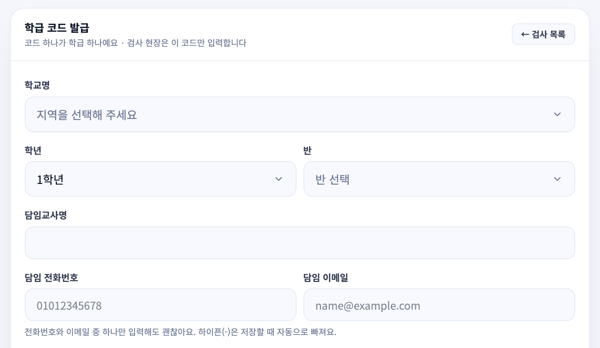
학교·학년·반·담임은 이 화면이 유일한 입력 창구입니다. 검사를 시작할 때 서버가 이 값을 그대로 검사 기록에 복사하므로, 나중에 코드를 고쳐도 이미 만들어진 검사 기록은 그때 값을 그대로 유지합니다. 학급을 잘못 골라 검사한 기록은 수정이 아니라 삭제 후 재검사가 맞습니다.
직접 발급한 코드에는 명단이 없습니다. 검사 현장이 아이 번호·이름·성별·생년월일을 손으로 입력하게 되므로, 오타가 그대로 임상 기록이 됩니다. 가능하면 A(신청 승인) 경로를 쓰세요.
| 항목 | 설명 |
|---|---|
| 검사 수 | 그 코드로 시작된 검사가 몇 건인지. 학급이 실제로 검사를 시작했는지 여기서 봅니다. |
| 삭제 버튼 | 검사 수가 0인 코드에만 나타납니다. 검사 기록이 하나라도 있으면 코드를 지울 수 없습니다 — 먼저 그 검사 기록들을 지워야 합니다. |
| 코드 재발급 | 따로 없습니다. 코드를 바꾸려면 기존 코드를 삭제하고 새로 발급합니다. |
6자리 코드만 알면 누구든 그 학급 아이들 전원의 이름·성별·생년월일을 화면에서 볼 수 있습니다 (검사 현장이 명단에서 아이를 고를 수 있어야 하기 때문입니다). 로그인도 필요 없습니다.
그래서: 코드를 단체 대화방·공유 문서·화면 캡처에 올리지 마세요. 담임 선생님 한 사람에게만 전달합니다. 유출된 것 같으면 그 코드를 삭제하고 새로 발급하세요 (검사 기록이 있으면 먼저 옮겨 적거나 인쇄해 두고 지워야 합니다).
선생님은 아래 주소로 들어가 스스로 신청합니다. 로그인이 필요 없는 공개 화면입니다.
https://speech-survey.vercel.app/apply
이 주소를 공문·안내문에 실어 배포하면 됩니다.
선생님이 넣는 것은 학교·학년·반·이름·이메일(필수)과 학생 명단입니다. 명단은 엑셀 파일을 올리거나 직접 입력할 수 있습니다.
명단 파일은 서버로 올라가지 않습니다. 브라우저 안에서 읽어 번호·이름·성별·생년월일 네 칸만 전송하므로, 명렬표에 주민등록번호가 들어 있어도 이 시스템에 남지 않습니다.
신청 화면은 완료 후에도 코드를 보여주지 않습니다. 관리자 승인이 실제 관문이 되도록 일부러 그렇게 만들었습니다 — 코드는 승인 메일로만 나갑니다.
신청이 들어오면 관리자 메일로 알림이 갑니다(설정돼 있을 때).
알림이 실패해도 신청 접수 자체는 정상 처리되므로, 알림에만 의존하지 말고
/admin/codes를 주기적으로 확인하세요.
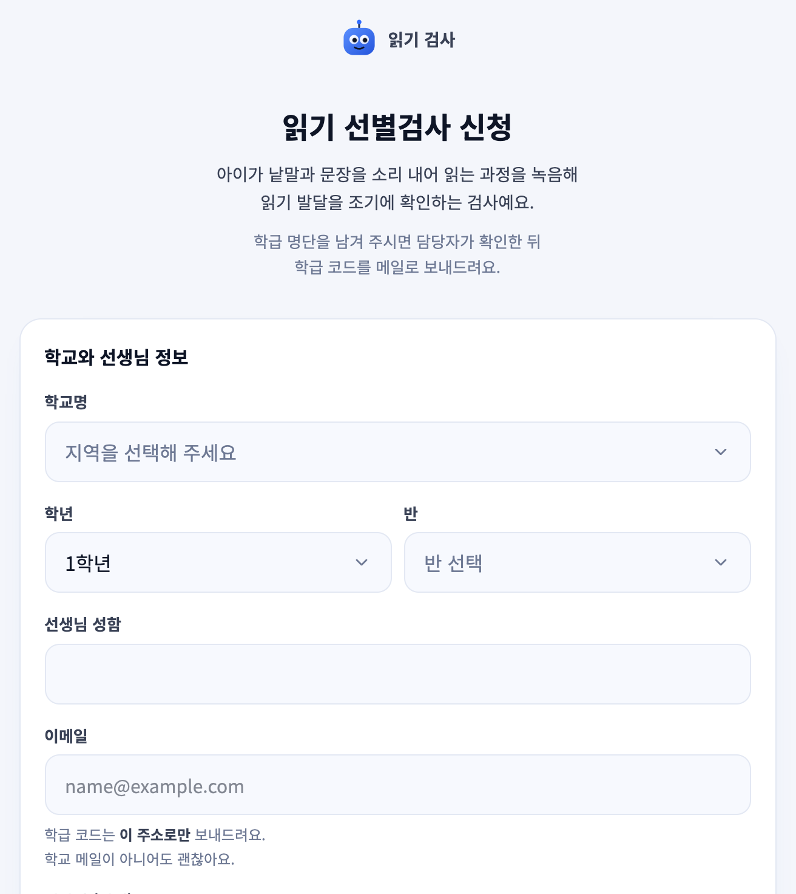
/apply).
아래로 내려가면 학급 명단 입력과 동의 체크가 이어집니다.누가 검사했고 무엇을 채점해야 하는지 한 화면에서 봅니다. 행을 누르면 결과지가 열립니다.
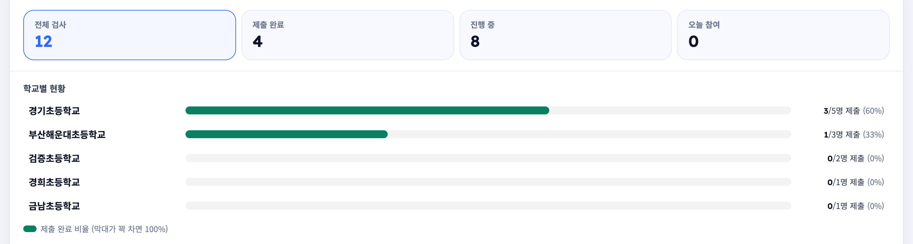
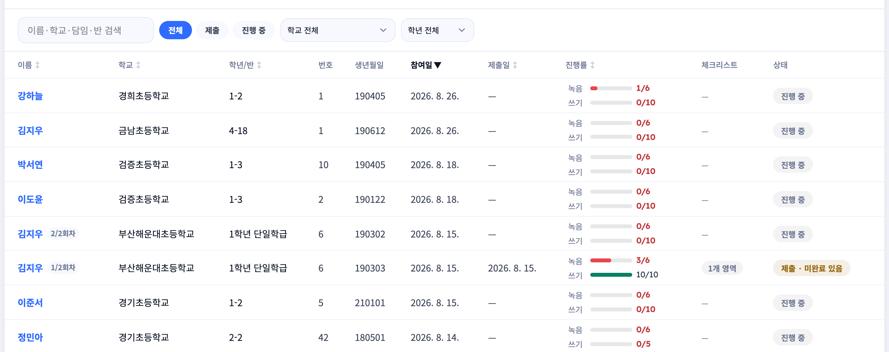
| 배지 | 뜻 | 관리자가 할 일 |
|---|---|---|
| 진행 중 | 아직 제출하지 않은 검사입니다. 검사가 진행 중이거나, 중간에 멈춘 것입니다. | 아직 채점하지 마세요. 빈 녹음은 「안 읽었다」가 아니라 「아직 안 했다」입니다. |
| 제출 완료 | 받아야 할 녹음·쓰기를 모두 받고 제출했습니다. | 채점하면 됩니다. |
| 제출 · 미완료 있음 | 제출은 했지만 녹음이 빠진 과제가 있습니다. 아이가 「모르겠어요」로 넘겼거나 업로드가 실패한 경우입니다. | 채점합니다. 빠진 과제는 오반응(X·0점)으로 자동 채워집니다 — 자세한 것은 4장. |
걸러 놓은 상태 그대로 주소창을 복사해 두거나 새로고침해도 유지되고, 결과지에 들어갔다 나와도 그대로입니다. 다만 브라우저 뒤로가기로 직전 필터로 돌아가지는 않습니다 — 필터를 풀려면 초기화를 누르세요.
지금 규모에서는 넉넉하지만, 전체 검사가 5,000건을 넘어가면 그 뒤 기록은 목록에 나오지 않습니다. 숫자가 그쯤 되면 개발자에게 알려 주세요(서버 쪽 작업이 필요합니다). 오래된 검사 기록을 파기하면 자연히 줄어듭니다 — 6장을 보세요.
이 앱에서 관리자가 가장 오래 머무는 화면입니다. 종이 검사지와 같은 순서로, 아이의 녹음과 점수 칸을 나란히 놓았습니다.
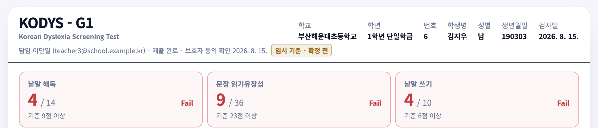
KODYS-G1은 1학년용,
KODYS-G2는 2학년용 검사지입니다. 학년이 양식을 정합니다.지금 쓰는 Pass 기준(1학년 기준 낱말 해독 9/14 · 문장 읽기유창성 23/36 · 낱말 쓰기 6/10)은 임상 담당자의 기준표를 아직 받지 못해 개발 쪽에서 임의로 정한 임시 숫자입니다(만점의 약 65%). 화면에 임시 기준 · 확정 전이 붙어 있는 동안은 참고용으로만 보세요.
점수 자체는 정확합니다 — 임시인 것은 「몇 점부터 통과인가」뿐입니다. 그래서 공식 검사지 PDF에는 Pass/Fail이 찍히지 않습니다. 나중에 진짜 기준표를 받아 넣으면 이미 채점한 검사도 저장된 점수로 다시 계산되므로 다시 채점할 필요는 없습니다.
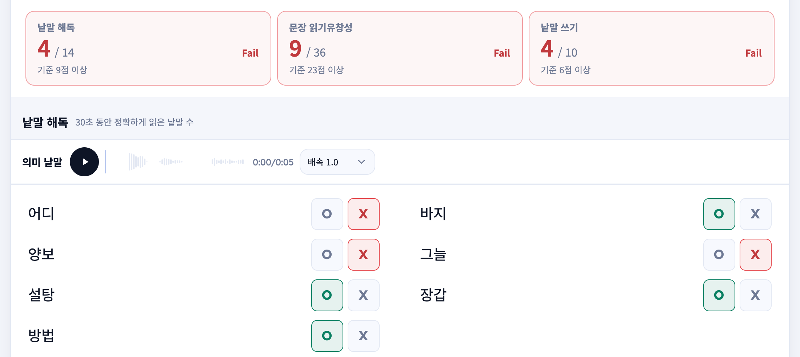
결과지 맨 아래에 항상 붙어 있는 범례입니다. 「채점 전」과 「0점」을 헷갈리지 않는 것이 핵심입니다.
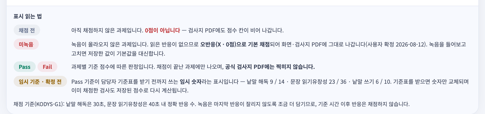
| 표시 | 뜻 |
|---|---|
| 채점 전 | 아직 사람이 채점하지 않은 과제입니다. 0점이 아닙니다 — 검사지 PDF에도 점수 칸이 비어서 나갑니다. |
| 미녹음 | 녹음이 올라오지 않은 과제입니다. 읽은 반응이 없으므로 오반응(X · 0점)으로 자동 채점되어 화면과 검사지 PDF에 그대로 나갑니다. 검사지에 「제한시간 내 읽지 못한 낱말은 0점」이라 적혀 있기 때문입니다. 녹음을 들어보고 채점을 고치면 그 값이 자동값을 이깁니다. |
| Pass Fail | 과제별 기준 점수에 따른 판정. 채점이 끝난 과제에만 나오고, 공식 검사지 PDF에는 찍히지 않습니다. |
| 임시 기준 · 확정 전 | Pass 기준이 아직 확정되지 않은 임시 숫자라는 표시입니다(앞의 상자 참고). |
| 고칠 수 있는 것 | 고칠 수 없는 것 |
|---|---|
| 번호 · 이름 · 성별 · 생년월일 | 학년 · 학급은 일부러 뺐습니다. 학년이 바뀌면 검사지 양식이 바뀌어 이미 저장한 점수가 다른 문항을 가리키게 됩니다. 학급 코드를 잘못 골라 검사했다면 수정이 아니라 삭제 후 재검사가 맞습니다. |
수정한 검사에는 원래 값이 함께 표시됩니다 — 잘못 고쳤을 때 되돌릴 근거가 됩니다.
결과지 맨 아래 오른쪽에 있습니다. 누르면 그 검사의 녹음 파일·점수·아이 정보가 전부 지워집니다. 휴지통은 없습니다. 보호자의 삭제 요청에 대응하거나, 잘못 만들어진 검사를 치울 때 씁니다.
지우기 전에 검사지 PDF를 먼저 내려받아 두세요. 지운 뒤에는 어떤 방법으로도 복구할 수 없습니다.
목록과 결과지를 계속 오가는 화면이라, 브라우저 뒤로가기로 나가도 채점이 사라지지 않도록 1.5초 자동 저장을 넣었습니다. 「저장했어요」가 사라지고 「저장하지 않은 채점이 있어요」만 남아 있다면 아직 저장 중이거나 저장에 실패한 것입니다 — 그 상태로 창을 닫지 마세요.
화면은 채점하는 작업대이고, 학교와 보호자에게 나가는 공식 문서는 이 PDF입니다. 결과지 아래 검사지 PDF 다운로드로 내려받습니다.
임상 담당자가 배포한 원본 검사지 PDF에 점수만 얹어 만듭니다. 양식을 다시 그리지 않으므로 문항·배점·칸 위치가 원본과 어긋날 수 없습니다.
| 찍힙니다 | 학교·학년·이름·생년월일·검사일, 낱말별 O/X, 문장별 점수, 소계·총점, 검사자 체크리스트 |
| 안 찍힙니다 | Pass/Fail 판정(기준이 임시라서) · 아이 번호(원본 검사지에 칸이 없음) |
03_홍길동_2026-08-15.pdf 처럼 두 자리 번호 + 이름 + 검사일로 내려옵니다.
한 학급을 이어서 내려받으면 폴더에서 번호순으로 정렬됩니다.
화면에서 방금 고친 값이 아직 저장되지 않았다면 PDF에 반영되지 않습니다. 「저장했어요」를 확인한 뒤에 내려받으세요.
지금 있는 검사지는 1학년(G1)과 2학년(G2) 둘뿐입니다. 3~6학년으로 발급한 코드로 검사하면
1학년 양식으로 검사·채점되고, 그 사실이 PDF 왼쪽 위 KODYS-G1에 그대로 드러납니다.
3~6학년 검사지를 받으면 개발자에게 전달해 주세요.
이 시스템은 만 14세 미만 아동의 실명·생년월일·성별·학교·반·번호와 음성 녹음을 갖고 있습니다. 법정대리인(보호자) 동의가 필수인 정보입니다(개인정보보호법 제22조의2).
| 어디에 | 무엇이 | 언제 지워집니까 |
|---|---|---|
| 검사 기록 | 아이 이름·생년월일·성별·학교·학년·반·번호, 음성 녹음, 쓰기 응답, 점수 | 결과지의 검사 기록 삭제를 눌렀을 때 |
| 학급 코드 | 담임 성명·전화·이메일, 학교·학년·반 | 코드를 삭제했을 때. 검사 기록을 지워도 남습니다 |
| 신청 명단 | 아이 번호·이름·성별·생년월일 | 그 학급 코드를 지우면 함께 지워집니다 |
아이에게도 마이크 확인 화면에서 쉬운 말로 알립니다 — 「지금부터 읽는 목소리를 녹음해요. 녹음한 소리는 검사를 확인하는 선생님만 들어요.」
| 방법 | 무엇이 지워집니까 | 언제 |
|---|---|---|
| 결과지 → 검사 기록 삭제 |
그 검사 한 건 — 녹음 파일까지 영구 삭제 | 보호자 삭제 요청, 잘못 만든 기록 |
| 학급 코드 → 삭제 |
담임 연락처와 학생 명단. 검사 기록이 남아 있으면 거부됩니다 — 먼저 검사 기록부터 지웁니다 | 학급이 끝난 뒤 |
| 일괄 파기 Supabase SQL Editor |
보존 기한이 지난 기록 전체 | 보존 기한을 정한 뒤, 주기적으로 |
녹음 파일은 데이터 행을 지운다고 함께 지워지지 않습니다. 반드시 ① 관리자 화면에서 대상 검사를 삭제한 다음 ② 남은 코드를 정리하는 순서로 하세요. SQL로 행만 지우면 녹음 파일이 남습니다. 이 작업은 개발자와 함께 하세요 — 정확한 절차와 명령은 개발 문서에 정리돼 있습니다.
/admin/codes의 명단 보기는 아이 실명이 뜨는 유일한 곳입니다.선생님이 코드를 못 받았대요
/admin/codes에서 그 학급을 찾습니다. 발급 목록에 있으면 승인은 된 것이므로
코드를 그대로 알려 주면 됩니다. 대기 중에 있으면 아직 승인하지 않은 것입니다 —
승인을 누르세요. 승인은 됐는데 메일만 실패한 경우가 흔하니,
승인 직후에 뜨는 문구를 항상 확인하세요.
코드를 넣었더니 「없는 코드」라고 나옵니다
셋 중 하나입니다. ① 아직 승인하지 않은 신청입니다(미승인 코드는
없는 코드와 똑같이 거부됩니다 — 일부러 그렇게 만들었습니다). ② 코드를 삭제했습니다.
③ 오타입니다 — 0·O·1·I·L은 헷갈려서 코드에 아예 쓰지 않으니 그 글자가 보이면 오타입니다.
녹음이 하나도 없이 「제출」로 올라왔습니다
아이가 「모르겠어요」로 넘겼거나 업로드가 실패한 것입니다. 그 과제는 미녹음으로 표시되고 오반응(X·0점)으로 자동 채점됩니다. 검사지에 「제한시간 내 읽지 못한 낱말은 0점」이라 적혀 있어 그대로 따른 것입니다. 같은 학급에서 계속 반복되면 그 교실의 마이크·네트워크를 의심하세요.
녹음이 안 들리거나 무음입니다
현장 기기의 마이크 문제입니다. 다시 검사하는 수밖에 없습니다. 같은 학급·번호로 다시 검사하면 2/2회차로 따로 쌓이고 이전 기록은 지워지지 않습니다.
아이 이름·생년월일이 틀렸습니다
결과지 오른쪽 위 정보 수정으로 고칩니다. 학년·학급은 고칠 수 없습니다 — 학급을 잘못 골랐다면 그 기록을 지우고 다시 검사하세요.
학급 코드를 지우려는데 삭제 버튼이 없습니다
그 코드로 시작된 검사 기록이 있기 때문입니다(검사 수 열을 보세요). 검사 기록을 먼저 다 지워야 코드를 지울 수 있습니다. 기록을 남겨야 한다면 검사지 PDF를 먼저 내려받으세요.
같은 아이가 목록에 두 번 있습니다
정상입니다. 재검사를 막지 않으므로 회차 표시(1/2회차)가 붙어 나란히 쌓입니다. 필요 없는 쪽을 지우면 됩니다.
채점을 했는데 저장됐는지 모르겠습니다
손을 멈추면 1.5초 뒤 자동 저장되고 「저장했어요」가 뜹니다. 「저장하지 않은 채점이 있어요」만 남아 있다면 아직 저장되지 않은 것이니 그 상태로 창을 닫지 마세요. 채점 저장을 직접 눌러도 됩니다.
Pass / Fail을 그대로 믿어도 됩니까
아직은 참고용입니다. 임시 기준 · 확정 전이 붙어 있는 동안 Pass/Fail은 임의로 정한 임시 숫자로 매긴 판정입니다. 점수 자체는 정확하니 판정보다 점수를 보세요. 공식 검사지 PDF에 판정이 찍히지 않는 것도 같은 이유입니다.
비밀번호를 여러 번 틀려 잠겼습니다
같은 인터넷 회선에서 5번 틀리면 10분 잠깁니다. 10분 뒤 다시 시도하세요. 비밀번호를 잊었다면 재발급 기능은 없고, 개발자가 새 비밀번호를 설정해야 합니다(8장).
아이 녹음이 외부로 나가나요
나가지 않습니다. 녹음은 비공개 보관소에 있고, 관리자가 결과지를 열었을 때만 1시간짜리 임시 주소가 만들어져 재생됩니다. 음성 인식 서비스에 보내지 않습니다 — 이 앱은 자동 채점을 아예 쓰지 않습니다.
제출된 검사를 아이가 다시 고칠 수 있나요
없습니다. 최종 제출된 검사는 녹음 추가 업로드와 재제출이 모두 막힙니다 — 검사 기록이 나중에 바뀌는 것을 막기 위해서입니다.
이 서비스를 계속 운영하려면 아래 계정이 필요하고, 아직 정해지지 않은 것 다섯 가지는 운영을 시작하기 전에 결정해야 합니다.
| 무엇 | 왜 필요합니까 | 없으면 |
|---|---|---|
| GitHub 소스 코드 |
코드가 들어 있는 곳. 여기에 올린 변경이 자동으로 배포됩니다. | 기능을 고칠 수 없습니다. |
| Vercel 서비스 배포 |
웹사이트가 실제로 돌아가는 곳. 주소·환경설정·배포 이력이 여기 있습니다. | 주소를 바꾸거나 설정을 고칠 수 없습니다. |
| Supabase 데이터·녹음 저장 |
아이 정보·점수·녹음 파일이 실제로 저장된 곳. 일괄 파기 SQL도 여기서 실행합니다. | 데이터를 파기할 수 없습니다. 개인정보 의무 위반이 될 수 있습니다. |
| Resend 메일 발송 |
승인 메일과 신청 알림 메일을 보내는 곳. | 코드를 손으로만 전달해야 합니다(안내 문구 복사). |
모두 개발이 아니라 운영 주체의 판단이 필요한 항목입니다. 정해지면 개발자에게 전달하면 코드에 반영됩니다.
| 항목 | 지금 상태와 결정할 것 |
|---|---|
| ① Pass 기준 | 임상 담당자의 기준표를 아직 받지 못했습니다. 지금은 만점의 약 65%를 임시로 씁니다. 기준표를 받아 전달하면 숫자만 바꾸면 되고, 이미 채점한 검사도 다시 계산됩니다. |
| ② 보존 기한 | 지금 보호자에게 고지하는 문구는 「목적 달성 시 지체 없이 파기」라는 일반 원칙입니다. 구체적인 기한(예: 결과 통보 후 6개월)을 정하면 동의서 문구와 화면 고지를 함께 바꾸고, 그 기한이 지난 기록을 자동으로 지우도록 만들 수 있습니다. |
| ③ 문의처 | 승인 메일이 「코드를 다시 받으려면 담당자에게 문의하셔야 합니다」라고만 말하고 어디로 문의할지는 비어 있습니다. 메일을 지운 선생님이 갈 곳이 없습니다. 창구(메일 또는 전화)를 정해 주세요 — 메일·복사 문구·가정통신문 세 곳에 함께 넣어야 합니다. |
| ④ 3~6학년 검사지 | 1·2학년 검사지만 받았습니다. 3~6학년으로 검사하면 1학년 양식으로 진행됩니다(5장). 해당 학년 검사지 PDF를 받으면 전달해 주세요. |
| ⑤ 도메인과 발신 메일 |
도메인을 인증하기 전에는 승인 메일이 선생님에게 가지 않을 수 있습니다.
시험 운영 중에는 모든 메일을 관리자에게 돌려 두는 설정을 쓰는데,
도메인을 산 뒤 그 설정을 반드시 꺼야 합니다 — 남아 있으면 선생님 메일이 전부
관리자에게 오고 선생님은 코드를 받지 못합니다. 전환 절차는 개발 문서에 정리돼 있습니다.
정식 도메인을 사면 접속 주소도 함께 바뀝니다 — 지금 쓰는 speech-survey.vercel.app은 임시 주소이므로, 그때 이 설명서의 주소(표지·6쪽)도
함께 고쳐야 합니다. |
화면에서 바꿀 수 없습니다. 개발자가 새 비밀번호로 해시를 만들어 Vercel 설정에 넣어야 합니다
(npm run hash-password). 비밀번호 값 자체는 코드나 문서 어디에도 적어 두지 않습니다.
공용으로 쓰는 비밀번호이니 담당자가 바뀌면 반드시 교체하세요.
| 주기 | 할 일 |
|---|---|
| 주 1회 | /admin/codes에서 대기 중인 신청을 처리합니다. 알림 메일이 실패할 수 있으니
메일만 믿지 말고 화면을 직접 확인하세요. |
| 월 1회 | 승인도 반려도 하지 않고 오래 방치된 신청(아이 실명 명단이 붙어 있습니다)을 정리합니다. 정리 방법은 개발 문서에 있으니 개발자에게 요청하세요. |
| 학기·연 단위 | 보존 기한이 지난 검사 기록을 파기하고, 끝난 학급의 코드도 함께 정리합니다(6장 순서 주의). 녹음 파일이 쌓이므로 저장 용량도 함께 확인하세요. |
| 검사 시즌 전 | 실제 아이패드·PC에서 마이크 녹음이 되는지 한 번 시험 검사해 보세요. 무음 녹음처럼 조용히 실패하는 문제는 실제 기기에서만 드러납니다. |
이 설명서는 화면을 쓰는 법을 다룹니다. 시스템을 고치거나 옮겨야 할 때 필요한 것
— 셋업 순서, 환경 설정값, 데이터 구조, 왜 그렇게 만들었는지 —
은 소스 코드 저장소의 README.md와 폴더마다 있는 README.md에
모두 적혀 있습니다. 개발자에게 그 문서를 가리키면 됩니다.